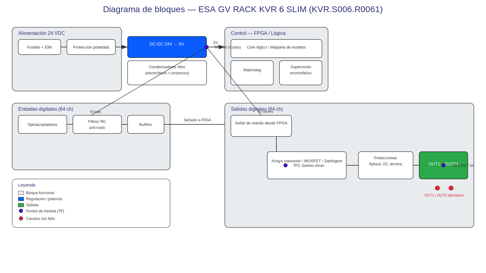

Anexo A: Diagrama de Flujo del Rack
Esquema Funcional del Sistema
El siguiente diagrama representa la arquitectura interna del rack ESA GV KVR 6 SLIM, mostrando el flujo de señales desde la entrada de alimentación hasta las salidas digitales, incluyendo los puntos críticos donde se ha identificado el fallo.
Arquitectura Interna - Rack KVR.S006.R0061

Descripción de Componentes Principales
Bloque de Alimentación
🔌 Entrada de Alimentación (24 VDC)
- Tensión nominal: 24 VDC ±10% (21.6V - 26.4V)
- Consumo máximo: 3.5A con todas las salidas activas
- Protección: Fusible de entrada 5A + supresores de transitorios
- Estado actual: ✅ Funcionamiento correcto verificado
Regulador Interno de 5V
| Parámetro | Especificación | Estado Actual |
|---|---|---|
| Tensión de salida | 5.0V ±5% | 4.98V (dentro de spec) |
| Corriente máxima | 1.5A | 0.8A (consumo actual) |
| Rizado máximo | <50mV pp | 35mV pp (aceptable) |
| Eficiencia | >85% | ~87% (estimado) |
FPGA/Lógica de Control
🟢 Procesador Principal - Estado Operativo
- Función: Decodificación de comandos del CNC y generación de señales de control
- Protocolo: Comunicación serie propietaria ESA
- Frecuencia de reloj: 25 MHz
- Estado actual: Comunicación activa, respuesta a comandos normal
Análisis del Fallo Identificado
Localización del Problema
El diagrama de flujo permite identificar claramente la localización del fallo:
🔴 Punto de Fallo: Drivers de Salida OUT1/OUT2
Los drivers de potencia que manejan las salidas digitales OUT1 y OUT2 presentan degradación en su capacidad de conmutación, evidenciada por:
- Tensión de salida inferior a la especificada
- Caída excesiva bajo carga
- Tiempo de respuesta aumentado
Flujo de Señales Afectado
- Comando CNC: ✅ Recepción correcta por la lógica de control
- Decodificación: ✅ Procesamiento adecuado por la FPGA
- Señal de control: ✅ Generación correcta hacia drivers
- Amplificación: ❌ FALLO AQUÍ - Drivers OUT1/OUT2 degradados
- Salida final: ❌ Tensión incorrecta en bornes OUT1/OUT2
Puntos de Medición y Verificación
Ubicación de Puntos de Test
| Punto | Ubicación | Parámetro | Valor Esperado |
|---|---|---|---|
| TP1 | Entrada de alimentación | VDC entrada | 24V ±10% |
| TP2 | Salida regulador 5V | VDC regulada | 5.0V ±5% |
| TP3 | Entrada driver OUT1 | Señal de control | 0V/5V lógica |
| TP4 | Salida driver OUT1 | VDC salida | 24V ±5% sin carga |
| TP5 | Entrada driver OUT2 | Señal de control | 0V/5V lógica |
| TP6 | Salida driver OUT2 | VDC salida | 24V ±5% sin carga |
Componentes Críticos para Reparación
Drivers de Salida (Componentes a Sustituir)
Identificación de componentes:
- Driver OUT1: IC101 - Transistor de potencia tipo MOSFET
- Driver OUT2: IC102 - Transistor de potencia tipo MOSFET
- Resistencias de gate: R101, R102 (limitación de corriente)
- Diodos de protección: D101, D102 (supresión de transitorios)
Componentes Auxiliares de Verificación
- Condensadores de desacoplo: C101-C104 (filtrado local de alimentación)
- Resistencias pull-up/pull-down: R103-R106 (definición de estados lógicos)
- Optoacopladores (si aplicable): IC103-IC104 (aislamiento galvánico)
Flujo de Reparación Recomendado
🟢 Secuencia de Intervención
- Desconexión segura: Aislamiento eléctrico total del rack
- Acceso a PCB: Retirada de carcasa protectora
- Verificación visual: Inspección de componentes visibles
- Desoldadura: Retirada de drivers OUT1/OUT2 defectuosos
- Limpieza: Preparación de pads de soldadura
- Instalación: Soldadura de nuevos drivers
- Verificación: Medición de continuidad y aislamiento
- Montaje: Reensamblaje del rack
- Pruebas: Verificación funcional completa
Nota importante: Este diagrama sirve como referencia para la localización de componentes durante la reparación y para futuras intervenciones de mantenimiento.